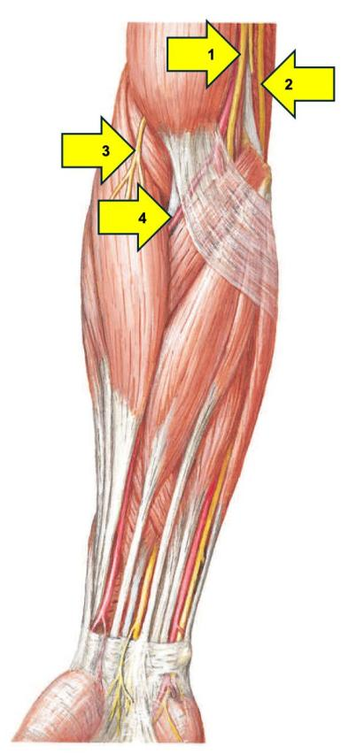
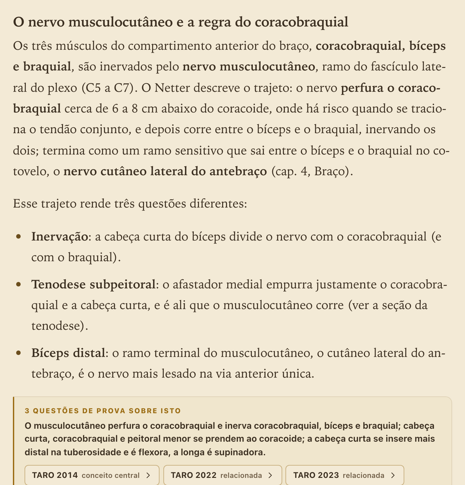
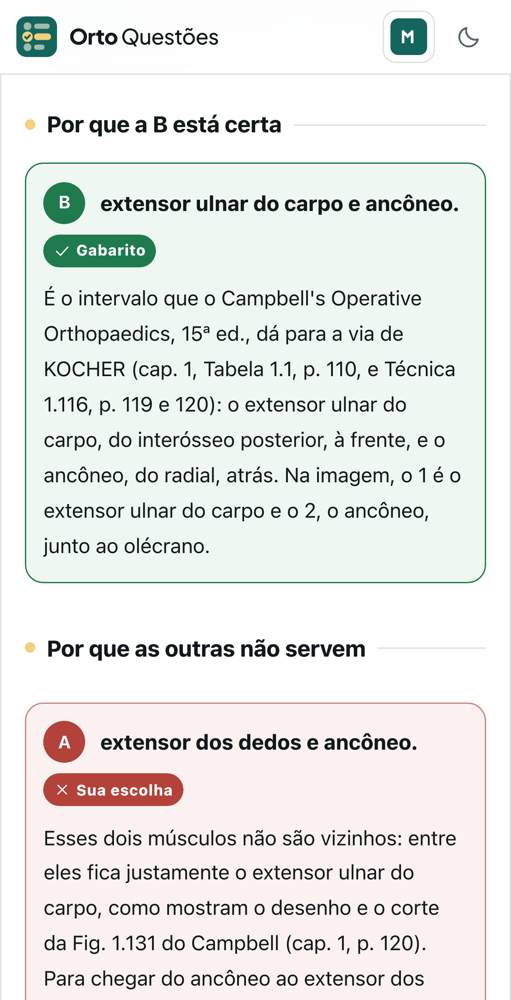
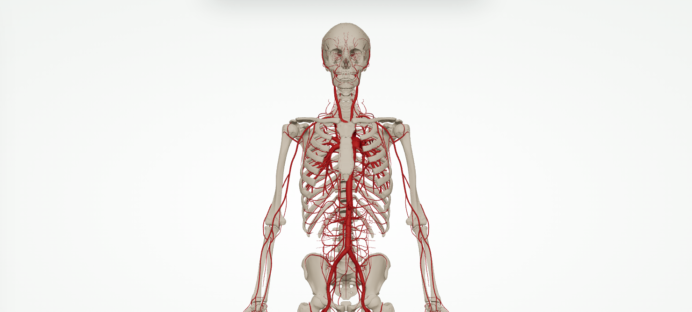

Prova do dia · TARO 2026
No reparo cirúrgico da lesão do tendão distal do bíceps braquial, utilizando-se a técnica de via única, a estrutura anatômica mais comumente lesionada é a sinalizada pela seta de número
ÚLTIMA FOLHA DO MÊS
Segundo o Green
Ramo final do musculocutâneo, fica em risco na exposição (cap. 25, p. 875). No estudo de GREWAL, a incisão única teve mais complicações, sobretudo neuropraxia desse nervo (p. 873). O Campbell manda identificá-lo e preservá-lo (cap. 48, p. 2525).
O comentário registra dúvida sobre a localização da seta 1 na figura sem legendas: vale o gabarito oficial e o que os livros dizem do nervo.
No próximo story: onde estudar isso
VIRE A FOLHA DO MÊS



Até 20 questões comentadas por dia · ortoquestoes.com.br · Telas ilustrativas